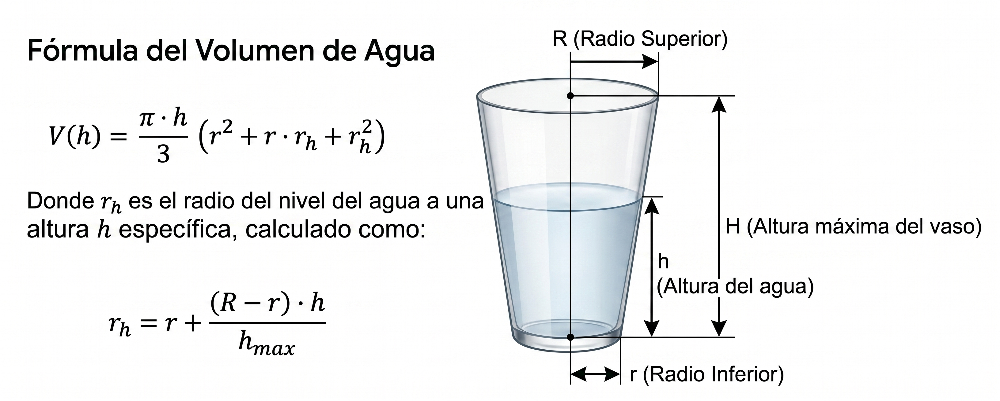

1. Dimensiones del Vaso
2. Medida del Agua
Mide la altura del agua desde la base interior del vaso. Este valor no puede ser mayor que la altura máxima del vaso.
Calcula el volumen de agua (h) basándote en las dimensiones fijas del vaso.

Mide la altura del agua desde la base interior del vaso. Este valor no puede ser mayor que la altura máxima del vaso.
Radio del nivel del agua calculado (rh): 0 cm
El volumen de agua en el vaso es:
0 cm³(Nota: 1 cm³ equivale exactamente a 1 ml)